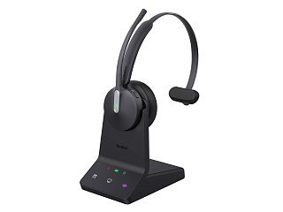

Yealink WH64 Mono UC
Цена носит информационный характер — актуальную стоимость и наличие уточняйте у менеджера.
Yealink WH64 DECT — гибридная беспроводная DECT-гарнитура. Она объединяет режимы работы по DECT и Bluetooth, обеспечивая эффективность и гибкость использования. Усовершенствованная технология Acoustic Shield 2.0 отфильтровывает фоновый шум и обеспечивает высокое качество звука. Индикаторы автоматически светятся красным при осуществлении голосовых вызовов или во время участия в конференции, показывая занятость сотрудника и оптимизируя коммуникацию в офисе. Высококачественные материалы и легкий корпус обеспечивают комфортное ношение в течение всего дня. Гарнитура легко подключается к IP-телефонам и платформам UC по USB, а к мобильному телефону — по Bluetooth.
Взаимодействие с несколькими устройствами
База оснащена несколькими USB-портами, что позволяет одновременно подключаться к компьютеру и IP-телефону, работая с ведущими UC-платформами. USB-кабель упрощает подключение гарнитуры по принципу Plug&Play. Встроенная интеграция с IP-телефонами Yealink обеспечивает надежное переключение между устройствами, обеспечивая профессиональную унифицированную работу в офисе.
Технология Yealink Acoustic Shield 2.0, 3 микрофона
Технология Yealink Acoustic Shield 2.0, которая реализована на базе 3 встроенных микрофонов, автоматически блокирует фоновый шум, обеспечивая четкую передачу голоса и значительно повышая эффективность общения.
Модель WH64 разработана в соответствии с самыми высокими стандартами эргономики, обеспечивая оптимальный уровень комфорта при длительном использовании. Легкая конструкция и тщательно подобранные материалы обеспечивают долговечность и стабильность.
Гарантийный срок — 2 года
Характеристики
Возможности
- Поддержка DECT и Bluetooth
- Поддержка Acoustic Shield Technology 2.0
- PnP-поддержка основных моделей IP-телефонов
- Совместимость с основными UC-платформами
- Подключение к нескольким устройствам
- Интегрированный LED-индикатор занятости
DECT
- Зона покрытия: до 185 м
- Диапазон частот: 1880-1900 МГц (Европа)
- Безопасность:
- Step C: аутентификация;
- DSAA2, шифрование;
- DSC2 (128 бит).
Bluetooth
- Зона покрытия: до 50 м
- Версия: Bluetooth 5.2
- Профили: HFP v1.8, A2DP v1.3.2, AVRCP v1.6.2, SPP v1.2
Звук
- Количество микрофонов: 3
- Размер динамика: 30 мм
- Частотный диапазон динамика: 20 Гц - 20 кГц
Управление
- Ответ/сброс/отклонение вызова
- Управление уровнем громкости
- Отключение/включение микрофона
- Отключение/включение микрофона поворотом штанги
Батарея
- Время работы в режиме разговора:
- DECT: до 14 ч;
- Bluetooth: до 26 ч.
- Время работы в режиме воспроизведения музыки:
- DECT: до 14 ч;
- Bluetooth: до 41 ч.
- Время работы в режиме ожидания: 157 ч
- Время зарядки: 1,5 ч (5 B/1,2 A)
Физические характеристики
- Порты:
- Мicro USB 2.0 x 1;
- USB 2.0 Type-C x 1;
- Мini USB 2.0 x 1;
- порт питания DC x 1;
- порт индикатора занятости x 1;
- USB 2.0 Type-C (на гарнитуре) x 1.
- Зарядная подставка (для гарнитуры)
- Подключение к ПК или IP-телефону
- Угол вращения штанги микрофона: 280°
- Вес:
- база: 180 г;
- гарнитура: 92 г.